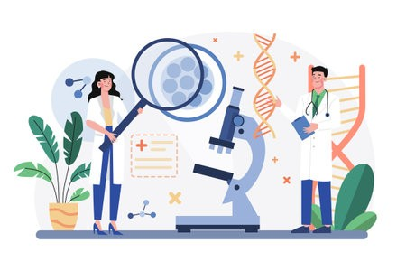

La observación sistemática permite visualizar a un fenómeno real. A partir de esta observación se establece específicamente el problema que se abordará y que en su momento se explicará científicamente. El planteamiento del problema debe ser claro, delimitado y relevante, ya que orienta todo el proceso posterior.
Ejemplo
Se observa que pacientes con diabetes hospitalizados presentan mayor riesgo de complicaciones infecciosas.
Figura 9
Observación y planteamiento del problema en el proceso de investigación.

Nota. Elaboración propia basada en Hernández Sampieri et al. 2014. Creación con IA.
¿Los factores influyen en las complicaciones?
- Complicaciones infecciosas en pacientes con diabetes hospitalizados se relacionan principalmente con el mal control de la glucosa, ya que la hiperglucemia debilita las partes fundamentales del cuerpo humano y propicia que se generen microorganismos. También influyen comorbilidades, el daño vascular propio de la enfermedad y el uso de dispositivos invasivos durante la hospitalización, que aumentan el riesgo de infecciones. En conjunto, estos factores explican la mayor susceptibilidad y gravedad de los procesos infecciosos en esta población (Casqueiro, Casqueiro & Alves, 2012).